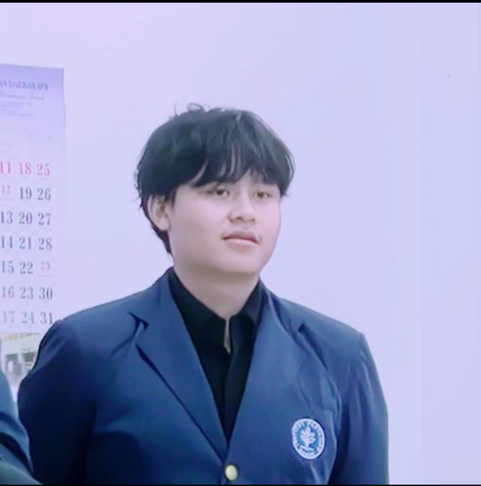

Perkenalan Diri
Nama: Muhammad Abrar Anggoro Putra
NIM: M0405241001
Proxy: Abelian
Program Studi: S1 Artificial Intelligence
Universitas: IPB University

Tentang Saya
Saya adalah mahasiswa S1 Artificial Intelligence di IPB University. Memiliki ketertarikan pada teknologi, pemrograman, dan inovasi. Saat ini saya terus mengembangkan kemampuan dalam bidang AI, matematika, dan problem-solving, serta aktif mengikuti kegiatan kampus dan organisasi. Saya bercita-cita untuk berkarier di perusahaan besar dan menjadi pribadi yang inspiratif bagi banyak orang.